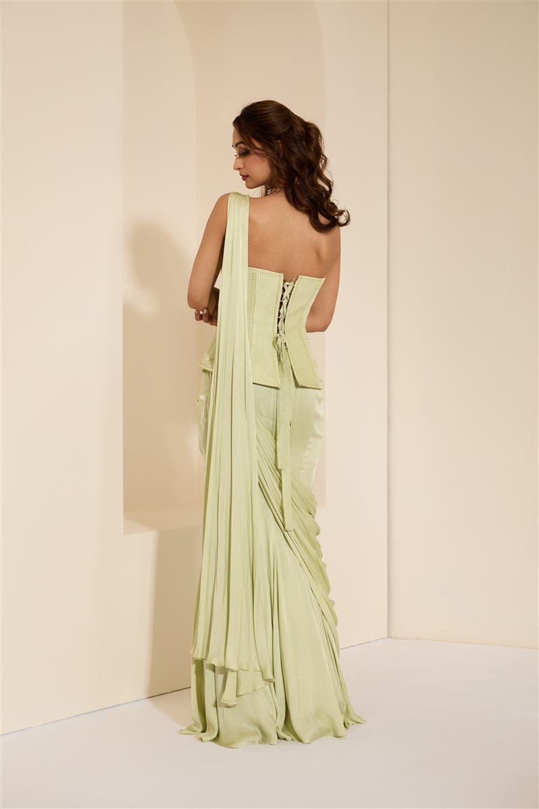
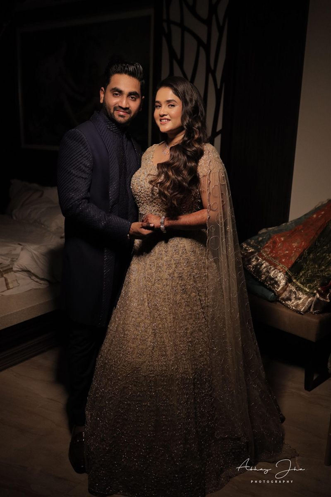
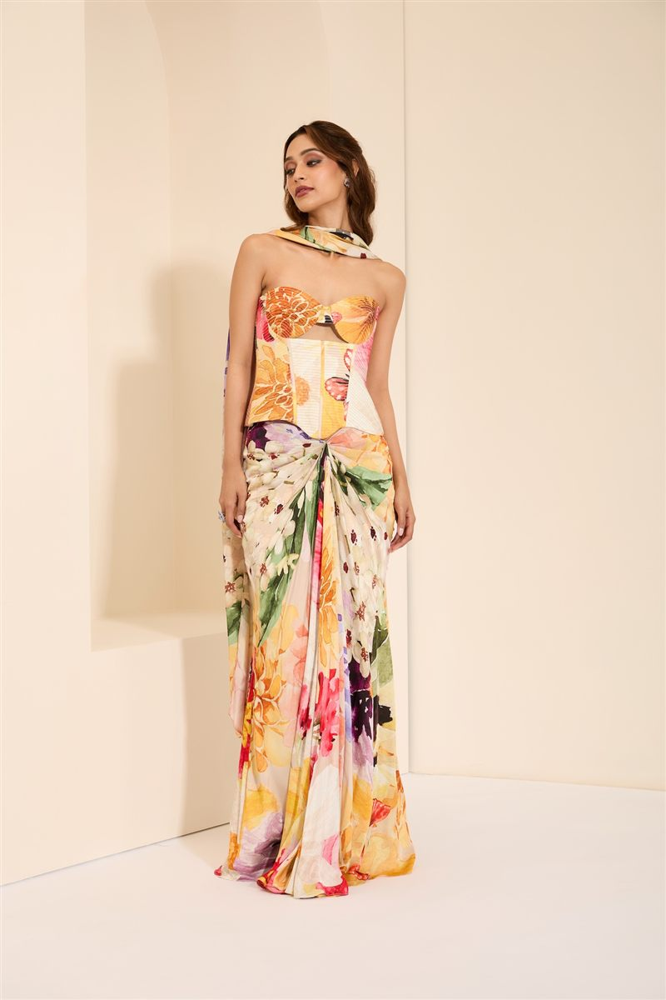

Inside the Atelier: The Language of Zardozi
A guide to the hand-embroidery technique that has defined K&A since its first stitch.

K&A —
Craft notes from the atelier, style edits for the modern bride, and quiet dispatches on the occasions that call for K&A — bridal, festive, and everything in between.

Style Notes
For a house built on structure — boned bodices, engineered drape, silhouettes that hold their shape across a twelve-hour celebration — the corset lehenga was never a trend. It was inevitable. A closer look at why structure has become this bride's most confident statement.
Read the Story
A guide to the hand-embroidery technique that has defined K&A since its first stitch.

Inside the fitting room, where every corset begins as a pattern and ends as architecture.

Why more brides are choosing a second silhouette entirely their own for the reception.

Rich colour, considered layering, and the pieces that carry a festival's weight with ease.

Festive dressing that favours restraint — for the woman who prefers her gold quiet.
Karishma and Ashita on rose petals, organza, and the collection that began with a garden.

On patience, precision, and why we have never chased speed.
We publish quietly, and only when a story is ready. Check back soon, or explore the Journal's other notes above.

Continue the Conversation
However you found us — through a story, a search, or a friend's recommendation — the next step is the same: a conversation, in person or virtual, about the piece that's yours.